OriginEvery world began as a story someone dared to tell.
OriginEvery world began as a story someone dared to tell.

Origin
We all know you need a story to know where you're going, to tell people what you're doing, to make a sale, to raise money, to build something that didn't exist before. What's not obvious is that story is the operating system of human identity, of culture, and of the very economy we live in.
I learned that the hard way. A decade ago I came to the end of my old story. I ended the character I'd been living and woke up to the realization that this was all a narrative, and I held the pen. So I used the power of story itself to turn my life into an adventure. I traveled across the planet chronicling solutions and deprogramming the economic myths that keep us stuck in a world we don't want, and I found answers to the world's greatest problems everywhere. Brilliant visionaries on every continent struggled to communicate the value and meaning of what they were doing, so the answers to humanity's biggest questions stayed invisible, illegible and impossible, even to the people building them. Then I hit the end of that story too. Nobody was coming to save us. Nobody was going to fund what I'd found.
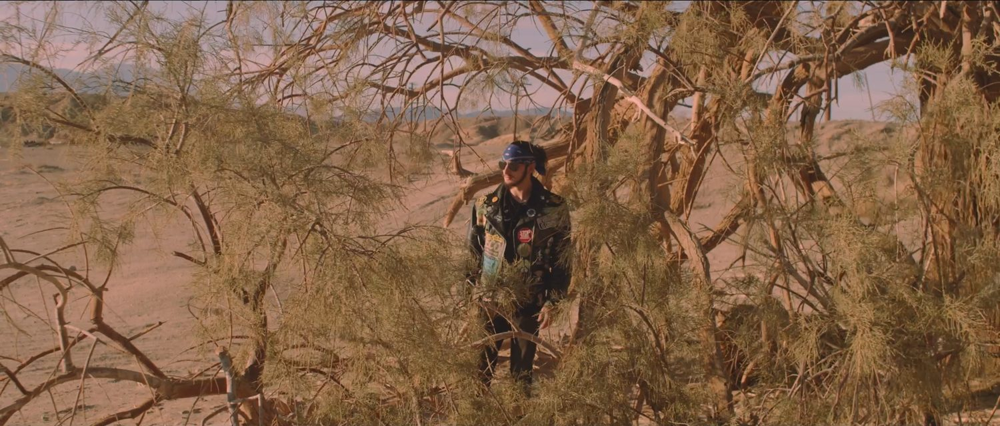
So I broke down and said fuck it. Someone has to build the bridge. Someone has to fund our evolution. From a trailer in the mountains of California I started a company, walking people through the same mythic journey I'd walked, the Metamyth, and I rewrote my entire existence with that pen.
Reality is story-shaped. The same structures that make a great book or an addictive series run human consciousness itself, and the brands and economies that create our world. The Metamyth is the ancient pattern that gives those stories meaning. We take founders on the journey of a lifetime to rewrite their story into an epic quest and a magnetic brand narrative that attracts people, resources and opportunities, a story that becomes more real the more you tell it.
That's why storytelling is fast becoming one of the most valuable skills in any company. Story is the coherence that holds strategy, product, brand, marketing and sales together, the thing that makes all the parts fit. It's how we create the future: tell the story of what we want to build, and watch the world rearrange itself into that shape.
We blow people's minds, fast and predictably, in a system that gets more dangerous by the day. In as little as ninety minutes we've changed the lives of some of the most brilliant humans on the planet, and their results will make your head spin. They've raised funds, written books and pulled millions of views, all by realizing their story was already meaningful. They just weren't the ones authoring it. It's a guided journey, held in community and powered by cutting-edge tech, that turns a well-told story, fully lived, into everything your mission needs: the strategy, the brand, the offer, the tribe, the future.
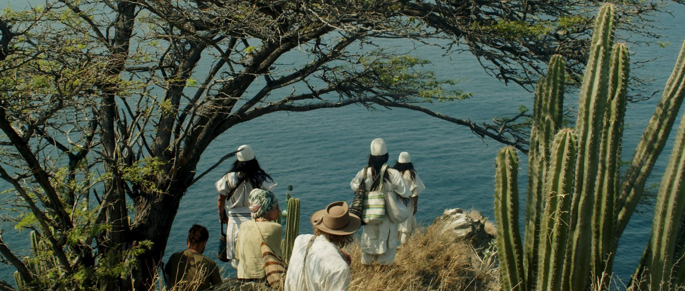
And I've lived every word of it. I was the exact person I'm here to help: a frustrated visionary, pissed off at a broken system, stuck in scarcity, unable to move the people around me, dreaming of a better world with no power to make it real. In one story, in one year, I transformed my own reality into something I couldn't have imagined: a vibrant, unbelievable community, a company that did $80K in sales, more than forty mind-blowing transformations, an incredible product, a meta-solution to the biggest systemic issues in the world, and a whole portfolio of incredible projects weaving together into a movement to rewrite the story itself.
And that's just the beginning of our story, because the whole point of Metamyth is that every personal story carries the soul of the collective one. We're here to change the world one story at a time, rewriting the stories that create our world together and remembering our true power as the storytelling species. If all the problems in the world are stories, and come on, we know they are, then look around. Politics is theater. Cult brands hypnotize the masses. And money, pure fiction, proves that a story based on nothing but belief can rewrite reality itself. So what could a true story do? What could yours do?
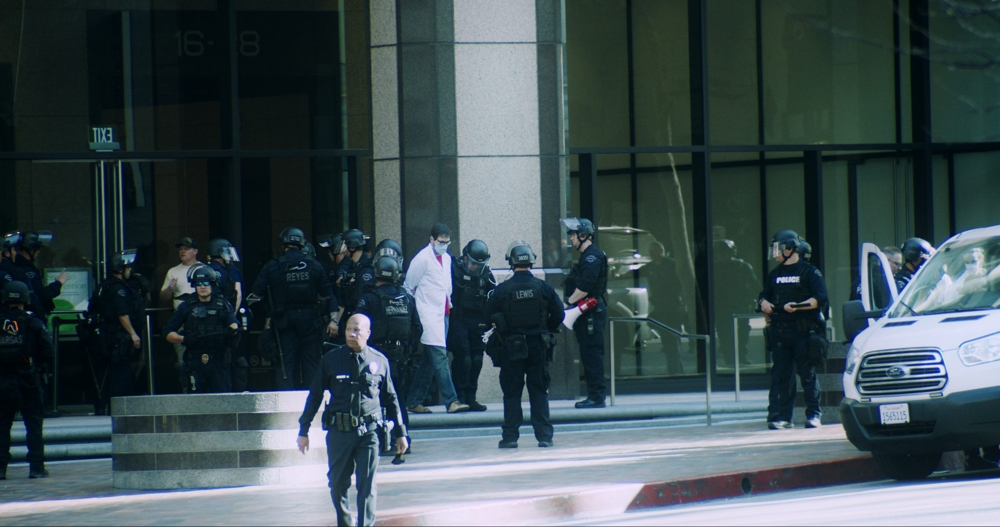
The CallingThe story that ran the world for five hundred years is ending.
The Calling
You already know the story we don't want. A casino economy betting against life, tech lords building escape pods instead of fixing the planet we're on, and a meaning crisis that has almost everyone wondering if their life matters. The story that ran the world for five hundred years is ending, and you can feel it in your body.
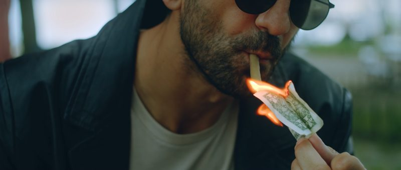
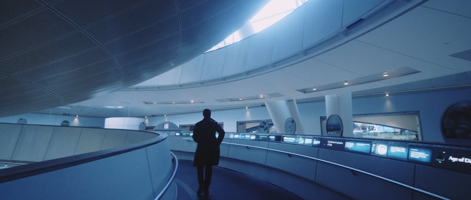
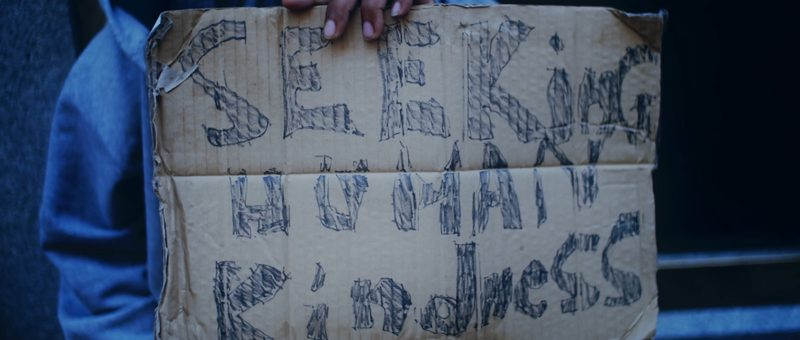
When everything fake becomes infinite, everything real becomes priceless. Think about how many people don't identify with the story they're living. Think about how many are about to lose their jobs and their purpose to AI, hundreds of millions by most estimates. Every one of them is going to go looking for a story, and the demand for meaning is endless. Personal development is already a $53B market racing toward $90B, and impact capital is piling up with no system to deploy it. The meaning crisis is becoming the meaning economy, the greatest economic transformation in the history of humankind, and whoever writes what comes next gets to author the future itself: how we price value, how business works, what wealth even means.
Right now we're focused on the visionaries, the regenerators, the changemakers. They're our bet because they're the ones holding the solutions. Help them, build the company on that, and we earn the right to scale to everyone else looking for meaning. Making purpose pay is the missing piece in the whole regenerative movement, and that's our quest: a decade-long journey to build the bridge between the solutions the world needs and the people and capital looking for them.
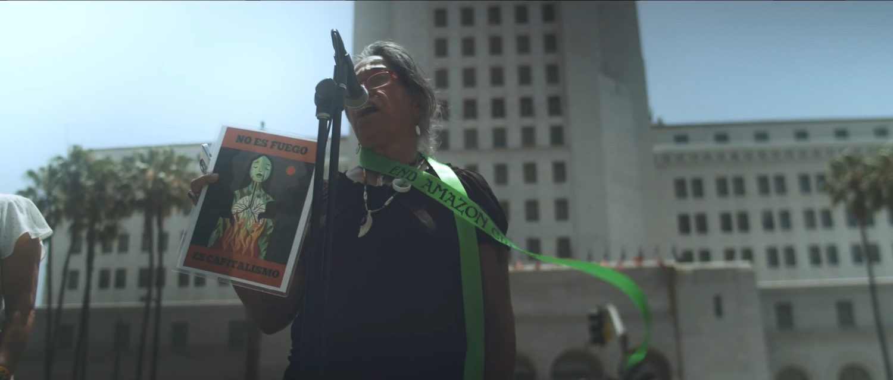
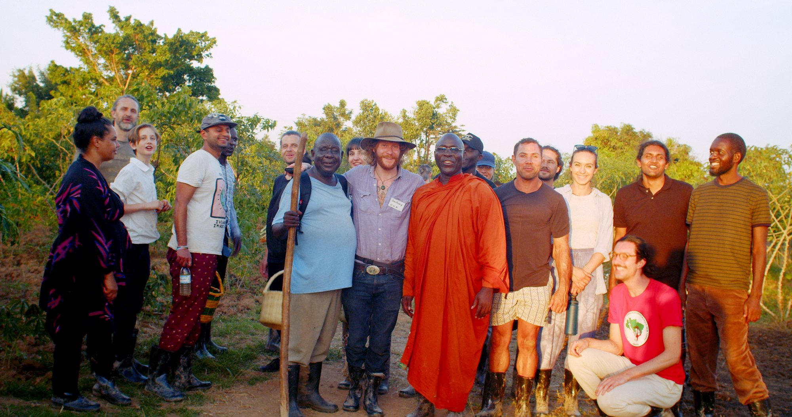
The CastWe don't fit in this world. We're here to build the new one.
The Cast
We know our customer, because our customer and the hero of our journey are the same person. They're purpose-driven visionaries, tired of the old system because they're here to build the new one. They're running companies, building organizations, launching startups. They're done protesting, done complaining, done spiritually bypassing. They know it's time for change and that they're the ones to make it. What most of them can't do yet is tell the story of what they're building, and that's where we come in.
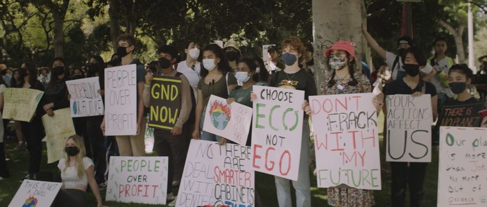
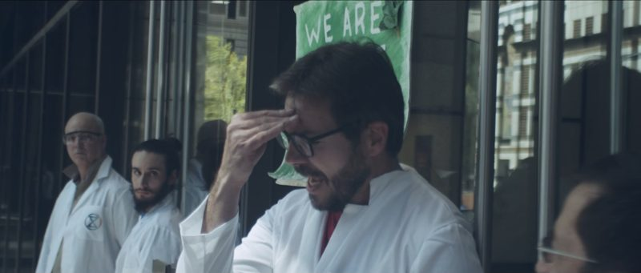
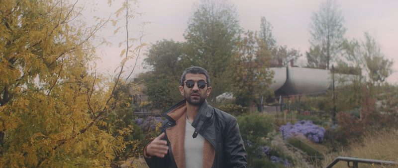
And around us is the regenerative movement, an interconnected, growing community conference-hopping, going on quests with indigenous wizards and building the future together. A rag-tag, brilliant group of misfit genius polymaths, joyfully aware of how broken the system is and building the new one. We're all collaborating toward this shared future, and yet few have cracked the economics of their own business or their funding, and nobody has an offer. Till now. This network is our secret weapon, our talent pool, and the venture community we're weaving into the most valuable IP on earth: people from around the world with real answers to the greatest crises of our time.
If you've never fit the box, you're already one of us.

The Crew
We all walked different journeys to get to the same mission, and the team is assembling from those shared journeys into a Kinship Quest of its own. A planetary bunch of renegades from in and out of the old system: deep insiders from Tesla, Peloton, Hollywood and the White House, top talent, and characters we couldn't make up. A family brand of the heroes we've been waiting for.
- Zachary MarlowVisionary Story Director
A decade across five continents with nothing but story: movement builder, filmmaker, alternate system designer and futurist.
- Cataleya MorganCo-founder and Chief of Staff
Ex Tesla, Peloton, Carbon. Missionkeeper: sales as service, marketing as movement, social entrepreneurship as ceremony.
- Terex PriceCTO
Environmental economist turned full-stack blockchain engineer. As Chief Science Officer at Azos Labs he connected $57M+ of environmental assets and mapped paths to $2B more. Runs defi4refi, a public-goods studio for regenerative finance protocol code.
- Tommy WilkinsonChief Financial Alchemist
Former pirate turned adventure tour guide, hedge fund manager, investor. A regenerative entrepreneur who grounds us and drives us forward.
- Jeremy AkersProgram Game Design
Expert facilitator of many-to-many coaching, agile scrum master, turns work into play.
- Andrew HasseFilmmaker and Operator
Left Hollywood's illusion to make cinema for a better world, and runs the operations like a film production.
- Nathan RickeyFull Stack Developer
Ex Cisco. Tech ethicist building outside extraction.
- Sarah ManskiAI Advisor
Spatial Web Foundation. Steering AI toward planetary enlightenment.
- The Kinship Community23+ epic changemakers
A global network of world-changing visionaries and ventures fully supporting the mission and serving clients, where many began.
Also advising: Fernanda Ibarra (new economic systems), Graham Boyd (econophysics) and Michel Bauwens (the Cosmolocal Initiative).
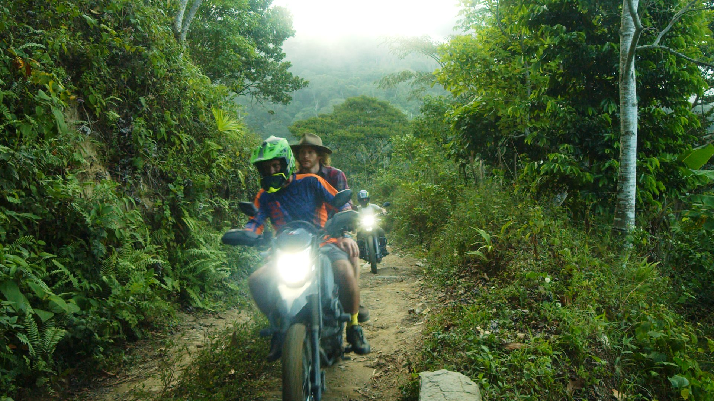
Making purpose payWhoever you are, there's a door.
Making purpose pay
We all have a story, and it's worth far more than any of us realizes. You could hold the cure for cancer, and if you can't tell it in a way that makes people care, nothing happens. Nothing changes. The people who've taken over this world don't have your truth, your wisdom or your experience. They have the story. The whole thing runs on story.
Metamyth is the transformation system that gives you yours. It finds the story inside a person, a project or a movement, turns the wound into the gift and the crisis into the calling, and forges it into everything the mission needs: the strategy, the brand, the offer, the tribe, the future. Nothing systematically increases the value of a person or an organization more than its story, and yet the greatest stories in the world are unsung.
People who've crossed call it mind-blowing: a process that reorganizes you on a cellular level, like dying and being reborn, coming out the other side with a new nervous system, in a new reality.
There are three ways in. Clients pay high-ticket prices. Contributors trade their skills and time. And when we believe in a project's story, we invest in it and share in its results.
Take the journey
The Kinship Quest
If you're a visionary carrying something the world needs.
Twenty-one people on the full journey together, three seasons a year, and every person in our first cohort asked to keep going.
$3,500a seat$6,500with one-to-one guidanceThe Expedition
If your venture is already moving and you need it sharp now.
The journey one-to-one over a few weeks. Our first client, a banker, called it the best money he'd ever spent. We run it for brands and teams too.
$7,000–15,000
We make deals with people
Partner projects
If your project is changing the world and the money isn't there yet.
When we believe in a project's story, we invest in it: it comes onto the journey, and we share in its fundraising and launches.
We invest in youContributors
If you have gifts to give.
Your skills, time and heart buy your seat. Contributors build with us and rise through levels as they go. Most of our first cohort came in this way.
Your gifts
Graduates stay on in Kinship, our community, and every person who crosses brings someone back.
 The SystemThe engine underneath the numbers.
The SystemThe engine underneath the numbers.
The System
Okay. We know how this sounds. We laughed too. The guy who spent years saying we'd evolve past money into a post-scarcity world went and built the most profitable machine he's ever seen, and it sells stories.
Nobody just shows up. Everyone who comes through walks out with their own story, and their story is the content. They post it, film it, can't stop talking about it, and they get paid when their friends come.
The ones who fall in love with it pay $14,000 to certify and carry the method themselves, and most become our guides. The people who create the demand are the same people who meet it.
Underneath all of it runs a state-of-the-art narrative intelligence system, and it turns the whole thing into a game. Your life becomes the story you scroll. It holds the method, so every guide delivers the whole journey without burning out. It holds your story, purpose and voice, so every tool speaks as you. It holds the whole network, matching one person's gift to another's quest. It starts as an app cheaper than therapy, and the people it lights up climb from the app into the journey and from the journey into service. The more stories it learns, the sharper and easier it gets, and that's what makes it scale.
And because the system does the heavy lifting, we can charge brands out the wazoo for what takes us hours.
Everyone stays in the community, and the ventures that rise out of it become partners we share in. Every piece feeds every other piece, and that's why the curve climbs. And here's the punchline: the people and companies running the old game, the ones wrecking the world, are going to pay us to join the new one and regenerate life with us. Laugh with us. Then come build it.
Our year ten sits among businesses that already exist.
The growth plan's tenth year, set beside transformation companies that already run at that size.
- Metamyth at floor$6.8Mour year ten in the growth plan, a scenario
- Hoffman Institute$11.3M2024 revenue, about 3,500 people a year (GuideStar)
- Metamyth at target$45.0Mour year ten in the growth plan, a scenario
- Mindvalley$75.0Mannual recurring revenue after moving to cohorts, community and membership
- Landmark$100.0Mrevenue built on graduates bringing guests, no advertising (Wikipedia)
Bars use a log scale, so each step to the right is a multiple. Mindvalley's figure is annual recurring revenue; Landmark's revenue passed $100M in 2018.
The story keeps storyingThe real story was always there.
The story keeps storying
What happens when someone rewrites their life story? In our experience, everything changes, and it changes fast.
- J Friday was my first coaching client. She was homeless, carrying a plan for community wealth nobody would hear. She went viral, became one of the top voices on Substack, landed in the national press, and the Scottish government changed its policy.
- Steve Keen predicted the 2008 crash and spent a decade being ignored. After three sessions he raised $18,000 in a single webinar. Within months he was pulling a million views a week, sitting on the biggest podcasts in the world, and talking with political parties across the UK.
- Michael Haupt studied civilizational collapse for decades with no way to make it land. After one ninety-minute session he wrote a 30,000-word book in 28 days, launched a new brand, and watched his videos go from a hundred views to seven thousand.
- Gareth Thompson, a doctor, spent five years searching for the link between personal and planetary health. We found it together in three hours.
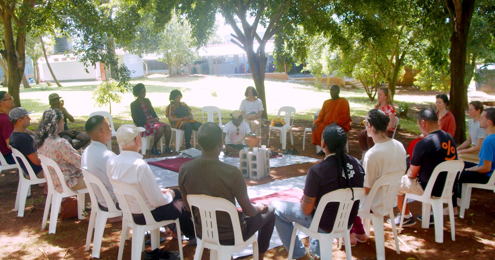
KinshipWe were never meant to transform alone.

Kinship
Community is the atomic unit of transformation. How crazy that the whole world economy is organized around individuals? Personal transformation is a scam in isolation, because you're fighting the way your brain is wired as a social species. We always and only transform in community. And yet we're living in the stone age of coaching, one expert talking at one client in one room.
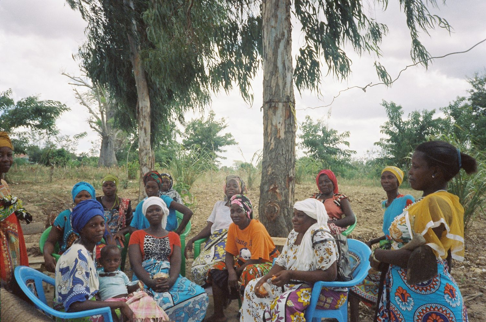
So the group is the technology. The Kinship Quest runs many-to-many: clients guide each other, they guide us, and the breakthrough often comes from someone in the room who walked the path a few weeks earlier. I'm sitting there watching it like, holy shit, we built a thing that teaches itself.
The magic of this community is mind-blowing. Everyone transforming on schedule. Crossing their thresholds in 30-minute sessions. Nobody ever wants it to end, and 100% of our first cohort asked to continue. It's transformed us as much if not more than anyone. It's pure magic. Like Geordan said: "How do you describe a process that reorganizes you on a cellular level? ... You trip the circuit on deep connection and ruined all my other in-person communities."
Scaling THAT is going to be the hardest part.
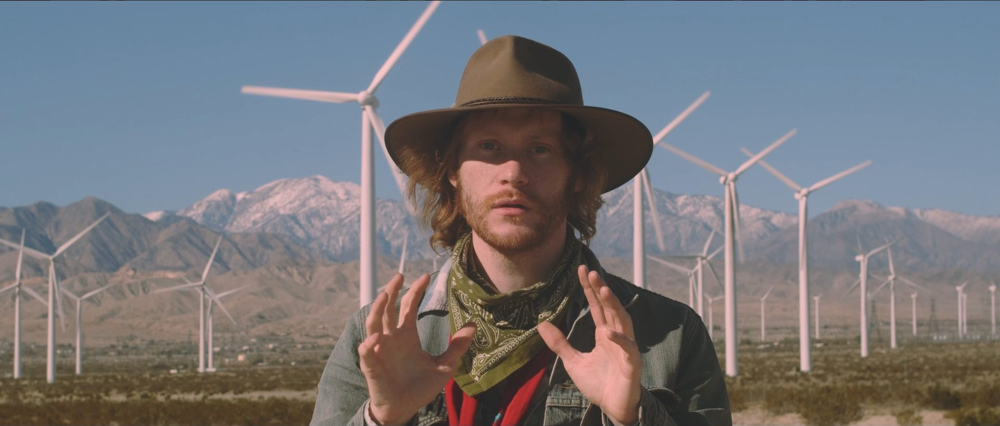
The story engineTake back the narrative and you create reality itself.
The story engine
For the last decade I've lived my life as a story and spent it like currency. I used it to build movements and organizations, and then to run this whole company by myself, learning every piece of it and doing all of it for the plot. It sounded insane. Turns out it was fucking brilliant, because it worked. I made $80K from my laptop the hard way and went straight to high ticket, and sales became a kind of therapy for me and the person across from me, an alignment that repels the wrong people and pulls in the right ones.
Pushy marketing turns you into a commodity and a salesperson. A great story builds a world around you that people want to be part of, and they come chasing you with their money to get in. Every brand anyone remembers has a story of values driving it. Ours has hooked people so fast and so hard that it converts like crazy off a tiny reach, because I've been too busy selling to build the system that tells the story. That's what this capital fixes.
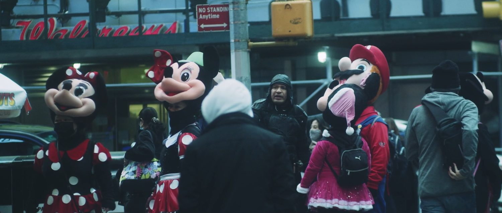
So we're building a transmedia production house and agency, a whole narrative universe with a family of characters: me, our clients, our co-creators, everyone telling the story together, from a banger phone video up to the cinematic work we've been shooting across the planet. Every dollar we spend builds an asset that keeps paying: an audience and a platform everyone shares, a discovery channel for solutions, a hub for the new world where people find projects, causes and investments, the marketing engine for the whole movement. And it goes way beyond marketing. Media built the culture and the reality we're all living inside, which makes this one of our ultimate plays. Take back the narrative and you create reality itself.
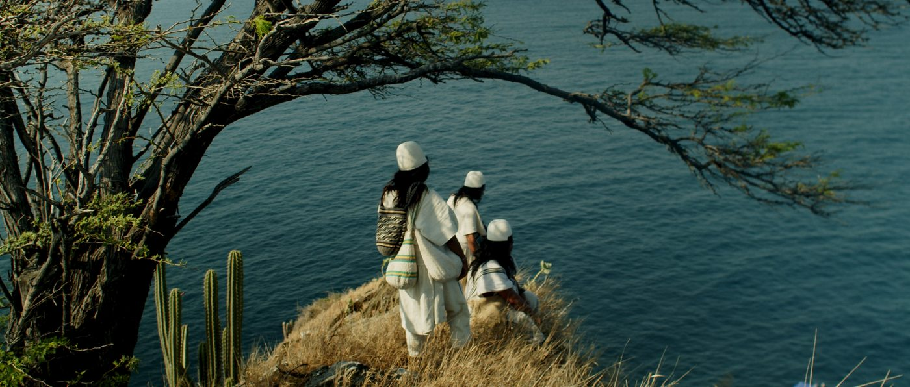


From the road: a decade of filming across five continents.
 Technology of MeaningThe first technology you program with story.
Technology of MeaningThe first technology you program with story.

Technology of Meaning
Story is the original technology. It's how humans got from scattered tribes around fires to civilizations, and every system running the world today is a story system that's evolved right up to the point of blowing itself up. Now AI shows up, the first technology you program with story, and the context that shapes our lives turns out to be the key to using it with purpose. Turning data into meaning is what stories do. We're all getting tired of tech that harvests us and drowns us in slop. So we're building the kind that makes you more human.
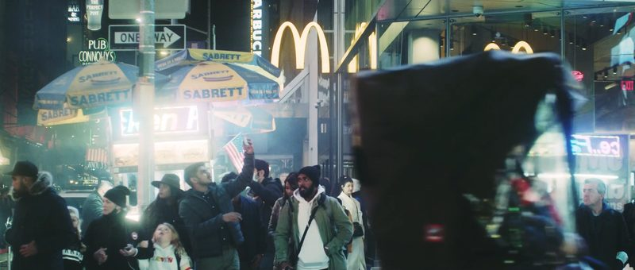
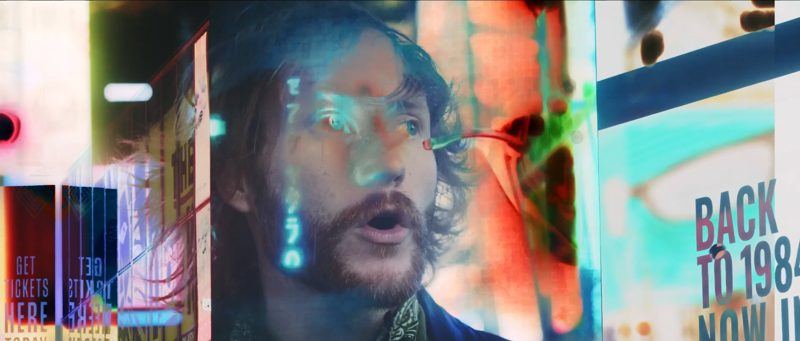
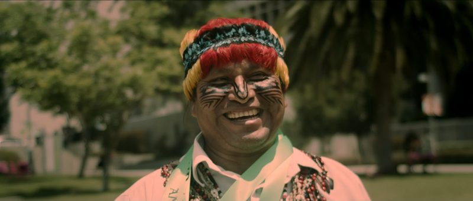
Right now the tech is me up all night running chains of prompts through the Metamyth sauce to build one client's story. Even that duct-taped version, on off-the-shelf tools, produces syntheses that blow people's minds. It's blown mine. So we're building the first level of the game: a living book you write in that rewrites your life. You talk, type or snap a photo of your journal, an AI guide walks you through it, and you get a reading of your own story after every chapter. It makes delivery easier, opens the journey to way more people, and every story makes the system wiser. And it explicitly won't write for you. It helps you tell your own story, because in a world drowning in slop, that's the edge.
From there it gets wild. Your story becomes a living model of you, so a guide can show up to a first call and say, "So tell me about this thing with your dad." It starts connecting gifts and needs, pinging the person who struggles to receive to the person whose whole gift is helping people receive. It goes multiplayer, where you advance by telling your story to your pod, on our own platform for the group call to adventure. Eventually it becomes a narrative internet: my story connecting to your need, to this gift, this investor, this project. If that sounds crazy, we have wizard nerds around the world already building pieces of it, all the way down to distributed computing that gets us off big tech entirely. The thing that's been pulling humanity away from its purpose becomes the thing that helps us find it again.
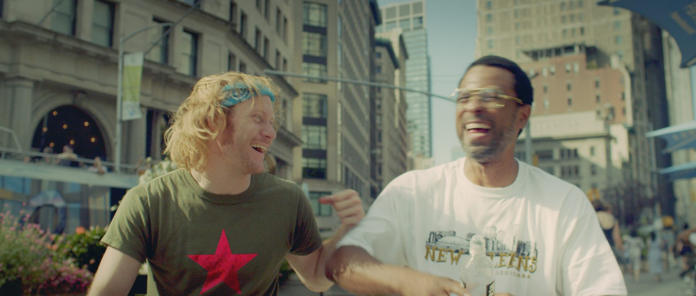
The Game of EasinessEvery weakness of the old game, turned into our advantage.
The Game of Easiness
A client was so in love with the process that she forgot she paid me, then lined up ten referrals for our next program. My highest-paying clients light up talking about this as our project, and our contributors keep showing up again and again, the best talent funnel I've ever seen. Sales, hiring, fundraising, partnerships, all of it grows out of real relationships, and every reason that counted as a weakness in the old system has become our advantage.
It gets easier by the day, because the story compounds. That's what easiness means: a business that runs on relationships and gets lighter the longer it runs. We're building the new economy cowboy style, on handshake deals, shooting first and asking questions later, while we architect an incorruptible all-win engine underneath it: contribution tracking, shared value, and the systems that make it easier for everyone inside it. It's going to work so well that even the people we used to protest will pay to be part of it. That's already happened.
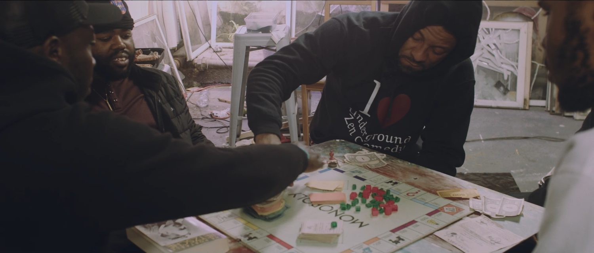
And everything we figure out, we teach, and program into the operating system so the whole thing becomes a game. It always was one. So why not give it a story, make it actually fun, make it co-op, measure more than one number, and let AI handle the boring stuff so the human stuff gets more and more premium? The whole thing becomes about creativity, and the rote productivity and busyness fall away. The experts in the old system are experts in a dead system, and we're writing the playbook for the living one.
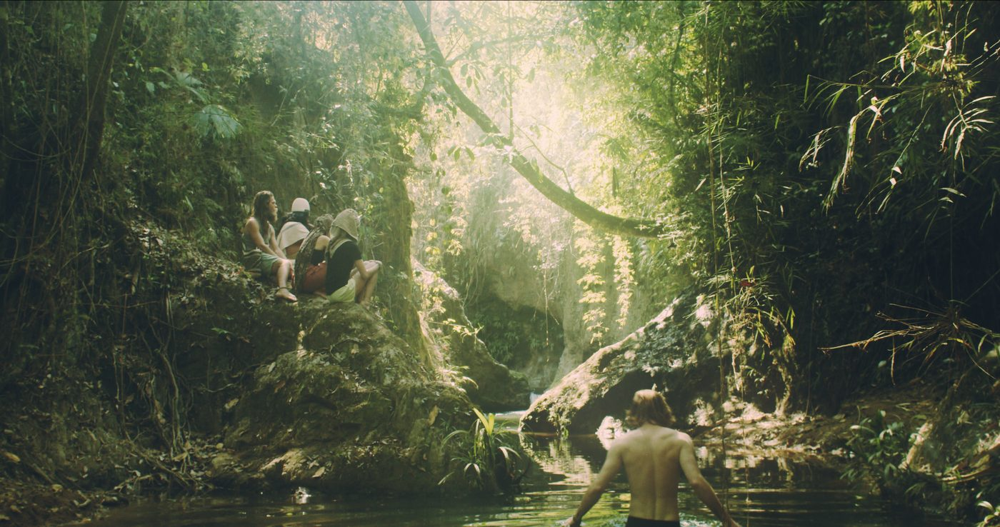
 Seeds in the GroundEvery time the world changed, someone talked about it until it was true.
Seeds in the GroundEvery time the world changed, someone talked about it until it was true.
Seeds in the Ground
One storyteller telling a new story on LinkedIn until it was true. A year later it's a global movement with dozens of people involved, many from some of the biggest companies in the world, building serious ventures and prototyping technology. Every day another amazing thing happens, and as the world around us gets shittier, the price of meaning keeps going up.
We've been making consistent $10K months with no systems, just stories. Nine contributors from five countries worked through our first cohort and stayed on. At the core are two co-founders. I spent a decade across five continents with nothing but story, building movements, making films and designing alternative systems. Cataleya Morgan was on track for director at Tesla, Carbon and Peloton, working on big teams carrying impossible missions that changed the world, until she left civilization to live in the Amazon with indigenous wisdom keepers and realized it's us who need to change.
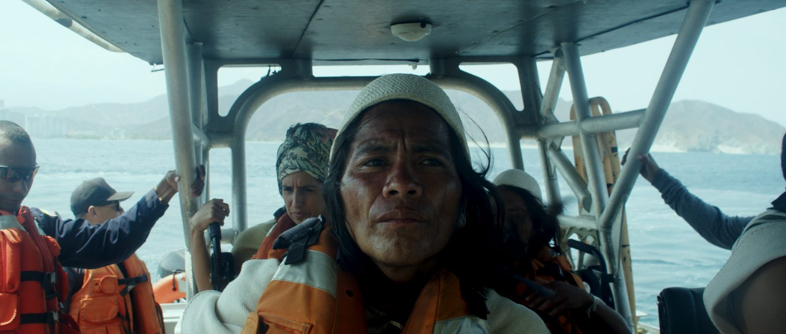
And I went from broke to investor, because I bet on visionaries who see from A to C before anyone else knows there's an alphabet. Aaron Malone is raising a $10M decentralized science fund with our help. When it closes, he invests in our round and we restory every project in his portfolio. Dr. Geordan Shannon is raising $2M, then $20M, then $2B for a valuation protocol every impact project will need, and we're building it with her. Matt Ross is building a nature-capital hedge fund with us. Jessica Arburn routes philanthropic capital into the journey. Magenta Light's community-wealth platform is raising with our help. A capital-mapping survey of just six members found more than $1.4M already invested in their ventures, 135+ acres of stewarded land, and $7.5–10M in near-term capital needs. We're already functioning as a fund in every form of capital, we've been offered general partner roles by Atlas Research and our technology partners, and we never waited for permission.
You can't buy that. You can raise money for software and rent an audience, but you can't fake a room full of people whose lives actually changed and who now want to build the thing with you. That takes years and dirt under your nails. We've put the years in.
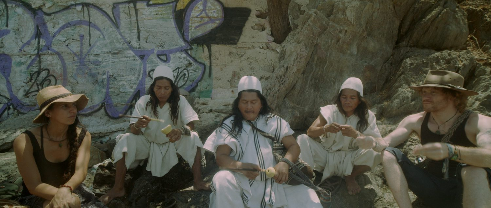
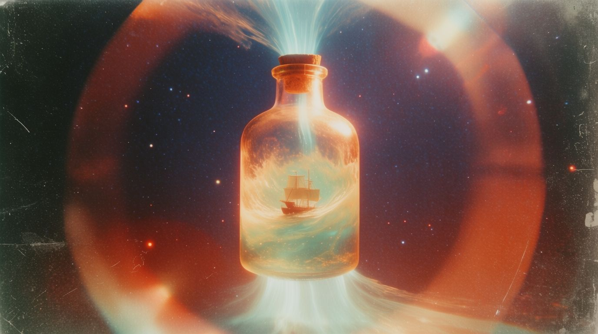
The unlockThe bottleneck is me.

The unlock
So if all this is working, why raise at all? Why not just keep making sales? Because the bottleneck is me. Building this company has been the hardest thing I've ever done, and I've done most of it alone: designing, building, marketing, posting, selling, building product, running a team, recruiting, fucking everything. Turns out I'm pretty good at all of it. But modeling forecasts, researching obscure capital instruments and writing documents like this one take me away from what I'm actually great at, the thing I'm a class of one in. Conversion is high and reach is tiny, so I could keep making sales and stay exactly this size forever. The irony is that our biggest bottleneck is telling our own story, because it's gotten so big. As I tell every founder I work with, the story that got you here can't get you to the next level.
Every time I hit some failure of the system, some deeply unpleasant part of how business gets done, I knew it meant something, because if I could get through it, I could help other people never have to. At the end of the first year it worked better than I could have dreamed. And the window is open right now. AI is wiping out purpose at scale, and the story is being bungled massively. I wake up in a cold sweat with individual faces in my head, visionaries who don't know you can do it like this. Every day this system isn't built, more of them lose hope.

So this is my own threshold. My old character is used to doing it all alone with nothing, and taking on capital to scale this the right way is a blow to that ego. Good. The storyteller is always changing, and taking all these people through the Metamyth has transformed me more than anything in my life. I'm here to tell the story, help people build the magical solutions the world needs and expand the vision, while a resourced team does everything I've been doing, better. The mission happens with or without it. What capital buys us is time travel: moving faster, in more directions at once, getting to the future before the old story finishes burning down.

The first $300K gets the team paid properly while we get the whole operation in shape. Then the story engine: an organic marketing lead, specialized organic help, an editor, a social manager, a designer and a new website, turning our story into steady inbound with no ad spend. The rest goes into the tech: a researcher and graph engineer, a second developer, a substrate partnership, and the AI workflow that becomes the operating system for the whole journey. A small reserve sits underneath.
In year one that takes revenue to roughly $492K at our floor case, $894K at target and $1.36M at stretch. Two more levels open as we hit our marks. Level 2, $520K, opens at $100K a month and funds the community: more guides, bigger certification classes, the distributed agency, and the capital and legal architecture for the commons and the federation. Level 3, $900K, opens at $200K a month and funds the game, the full app that opens the door to whole organizations. Each level is repaid from the cash our growth creates, and the faster we get there, the faster everyone gets paid.
From there, the capital changes shape: patient capital, blended finance, recoverable grants and philanthropy, flowing into the fund, the highest stage, where we deploy capital into the best projects in the world, vetted and filtered through the journey itself. If you want to go bigger with us, that's where we talk.
What stands between us and scale, named plainly.
Every old map marked its dangers. These are ours, each with the route across it.
Thirty Hats
A founder wearing every role it takes to build and run a highly complex business, including writing these words, doing all the things instead of the few he's a genius at. For all the creativity and vision, he isn't a businessman at heart.
Crossed byA paid team running the show, so Zachary does the few things only he can do. Team, $55K, then level 2.
The Founder Bottleneck
Every sale, session and story runs through one person, so the business can only grow as fast as he can move.
Crossed byGuides, certification and a system that holds the method. Tech build, $75K, then level 2.
One Storyteller
The story lives in one founder, and the project is complex enough that saying it clearly is hard. There's too much value to capture and not enough hands to capture it.
Crossed byTelling our own story at scale and expanding the narrative beyond one person. Organic marketing, $70K.
No Engine Yet
There's no sales and marketing system that runs on demand, so we're always seeking the next sale. We're drowning in content with no distribution engine to spread it, and no brand or assets that make all of this bingeable and easy to say yes to.
Crossed byThe story engine, a designer and a new website. Organic marketing $70K, designer $35K, website $15K.
Scarcity at the Close
Every sale feels necessary, which kills the vibe and the close rate. Everyone says they want Metamyth, and the sale slips the moment money comes up. There's no runway to build with presence and patience.
Crossed byRunway, so we sell from abundance. The 18-month build and a $30K reserve.
The Unfinished Product
We're doing all of this with a product that's still being built.
Crossed byTech build, $75K now, then the full app at level 3.
Capacity
Until guides are trained, demand we can't serve slips away.
Crossed byGuides trained from our own graduates, the first arriving in 2027. Level 2 trains more of them.
Handshakes and Busyness
There's no solid organizational structure, no clear agreements holding it all beyond handshakes, and no system. Too many things are going on without enough focus or delegation.
Crossed byAgreements, roles and a team with clear lanes. Team $55K, legal $20K.
The Vessel
The company is still a single-member LLC, and the cooperative and fund structures aren't built yet.
Crossed byLegal, $20K now; the cooperative and fund architecture at level 2.
Proof Not Yet Measured
The transformations are real, but outcomes aren't tracked systematically yet.
Crossed byOutcome tracking built into the platform, so every transformation becomes evidence. Tech build, $75K.
Too Big to Carry Alone
Our contributors bring powerful devotion and motion, but they're competing with jobs they'd love to quit. The founder's self-reliance has to give way to real partners who hold the financial responsibility, because this mission is too big to tackle without abundant resources.
Crossed byPaying the team, and partners who share the weight. The Mission Note, level by level.
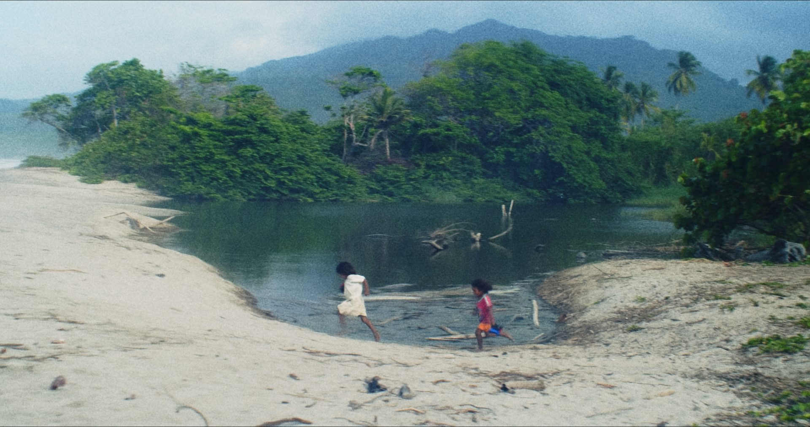
The ForestWhy invest in a potted plant when you can grow a forest?

The Forest
We're rich in every form of capital except financial, and financial is the weakest of them. We haven't made as much money as we would have if money were the goal. It isn't. We're here to change the fucking world, so we've done plenty of things nobody chasing a return would ever do, and every one of them planted something: relationships, trust, talent, IP, land, ventures, and a story that makes strangers devoted. Product, customers and capital can all be bought. A story like that has to be earned, and every person we serve adds a chapter to it.
We're building from sovereignty, so the next raise comes from strength. The larger vision, the capital architecture, the ecosystem and the federation, lives in our Vision document for anyone who wants to go deeper.
We're growing an ecosystem and a movement that compounds value in every direction. The seeds are in the ground. This plan grows the forest.
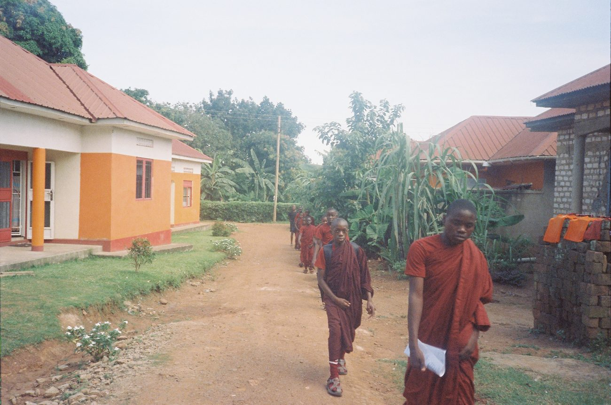
I was homeless for many years. I lived on food stamps in six states. I watched friends die on the streets, and then I traveled the earth to see what the story of money has done to the planet and the people on it. I crossed heaven and earth looking for solutions, and I walked them across the world. I have given everything to this quest, and I will never quit.
 How We Changed the StoryA vision from the future, remembering its way back to us.
How We Changed the StoryA vision from the future, remembering its way back to us.
How We Changed the Story
This is a vision from the future, remembering its way back to us.
It began one story at a time. People came through the journey and walked out authors of their own lives, and the narrative intelligence holding their stories began to see the whole field at once: whose gift answered whose quest, which founder needed which storyteller, where capital looking for meaning could finally land. Every story it held made the next match sharper, and underneath us a narrative internet grew, a living web that let thousands of people coordinate around shared purpose the way markets once coordinated around price.
Then the circle widened. The same many-to-many system that made our community fall in love with each other let us take entire companies through the metamyth, and the companies running the old game, the ones that had spent decades wrecking the world, started paying us to rejoin it. Department by department they evolved into a game of purpose: from busyness to easiness, from marketing to movement, from brand to world. Every company that crossed over became a story that pulled in the next. Better than revolution: evolution.
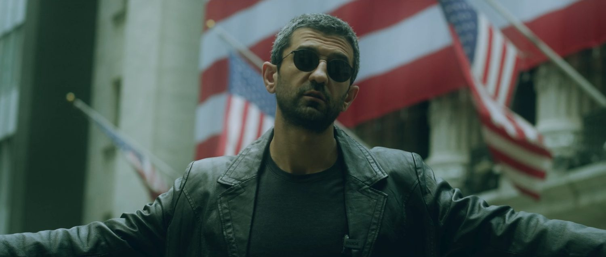
And the circle widened again. The ventures on the other side of the stories found their funding, launched their offers and carried their solutions out into the world. Moving a billion dollars into regeneration took just 3,333 of them hitting $25,000 a month in revenue for a year, or raising $300,000, which is what we did in our first year. As partners, we shared in what they built, and their stories brought the next wave into the journey, so every turn of the spiral fed the next.
The skeptics who had been betting on the wrong future started investing in the right one. This is how we changed the story.
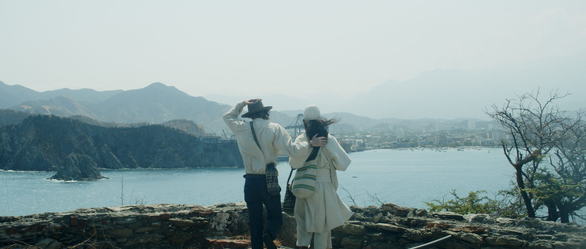
The FundThe highest stage. Our return, and our gift to the world.
The Fund
This is our return, and our gift to the world.
If you've ever been the weird one, the misfit, the one who didn't fit the box and couldn't make yourself perform for a game you could see was rigged, this part is about you. You've always had a vision. You've always had so much to give. And the system never saw it, never encouraged it, never once bet on you. I know, because it never bet on me. I gave everything to this quest, and I lost everything for it. Then I traveled the world and found people like us everywhere, brilliant, heart-centered, courageous, carrying exactly what the world needs, and that stops being a heartbreaking story the moment you realize they have the value. They have the fucking value, and the market says they're worth nothing. Most of them don't even believe in themselves. That's the asymmetry, and it makes this a bloody good trade.
Look at who's already here. Magenta Light spent a decade following a psychedelic vision of community wealth, built a platform, programmed it herself, worked eighty-hour weeks and grew Bloom Network into a community of thousands across the planet. Matt Ross is the most brilliant, charismatic, hilarious genius of a banker, who left the system after winning it to learn how nature flows value and saw that nature is the biggest asymmetrical bet of all, and the damned irony is that he couldn't value himself until the journey. Geordan Shannon understood that nature's value was too vast for the old math, the journey gave her the story to explain it, and now she's building the multidimensional valuation that makes every form of value we carry legible. Jessica Arburn, through Dose of Hope, helps givers become receivers. Aaron Malone is building Unbound Science, a fund for decentralized science. These are the people we bet on: the solutions I traveled the world to film, the mad geniuses at the edges of the map who would never play the business game, who don't trust capital, but they trust me. By the end of our first cohort they were all on one journey together. They are our investors, and we are theirs, literally.
And here's the joke. Isn't it amazing that in capital-ism there are so few widely understood ways for capital to actually move? I stood on a rooftop with a bunch of VCs in their suits and asked them: if there were an alternative that wasn't extractive and soulless, that didn't bleed companies for thousand-times returns, fail most of the time, offer no support and just own the transaction, do you really think anyone would choose you? For too long venture capital has owned the early stage, owned the innovations humanity needs to live, and either pushed them into for-profit traps or starved them of the capital they need to survive and change the world. The patient, purpose-driven crowd that sees it has never scaled fast enough to beat it. Meanwhile $84 trillion is moving between generations, and the people carrying the real solutions are priced at zero, right alongside nature itself. The most asymmetric trade in the history of humanity is sitting in plain sight, and we're building new ways for capital to move toward it, sharing the upside instead of owning it and using it to take over the political system and rewrite the narrative. Well, we are rewriting the narrative, just in the opposite direction.
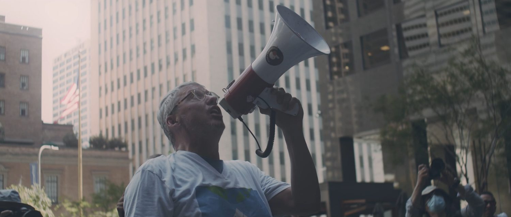
So the journey becomes our diligence. The ventures in the pool get access to each other, to the stories, clients, services and technology we share, and to every form of value and capital we hold that isn't money, until it starts transforming itself into money. Every venture pays a share back into the commons that holds the whole. Philanthropy, grants, patient capital and return-bearing investment flow through the same living system, the risk spreads and the rewards are shared. Money becomes a plot device in a greater story, because it was never the point. Purpose was.
It's our time. We go from asking for funds, to raising for others, to writing the checks, to changing what the checks are made of. That fund is Another World Is Possible.
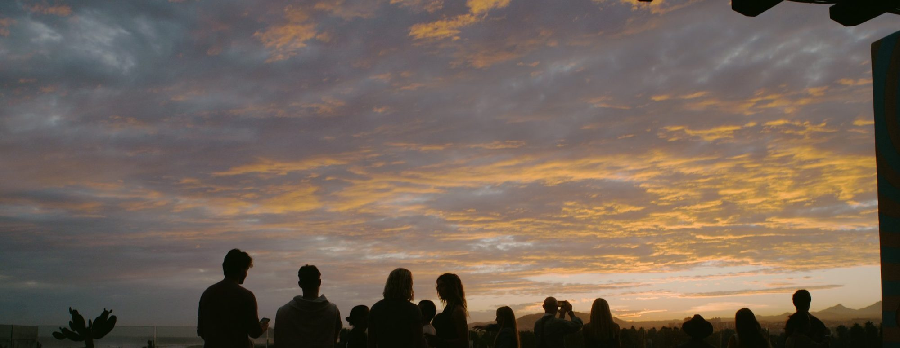
Come help write what comes next.
Money is a fiction humans invented, and right now we're dismantling the living planet to keep its narrative intact. That's how fucking powerful STORY is. If a story can do that, a better one can do the opposite.
An invitation with multidimensional returns.
Purpose, talent, network, craft, story and capital, each compounding into the others, as we return to who we've always been.
Transform your story
Cross into your purpose, and watch people, capital and attention move toward what you carry.
Clients pay for the journey. That revenue runs the business, and every other path strengthens it.
- $3,500Kinship Quest · a seatIf you’re a visionary carrying something the world needs.Twenty-one people on the full journey together, three seasons a year.
- $6,500Kinship Quest · guidedThe same cohort, with one-to-one guidance.A guide at your side through the crossing.
- $7,000–15,000The ExpeditionIf your venture is already moving and you need it sharp now.The journey one-to-one over a few weeks. We run it for brands and teams too.
Graduates stay on in Kinship, our community, and every person who crosses brings someone back.
Gift the journey
Give the journey to a visionary who couldn't reach it alone, and a living to the regenerators who support this work.
Gifts and grants reach the work through our fiscal sponsors.
01Sponsor a seat
Fund a journey for someone carrying medicine the world needs who could not otherwise afford it.
02Sponsor a livelihood
Give a living to the regenerators and visionaries who support this work, so they can keep doing it.
03Fund a program
Back a whole program or bioregional initiative, from a cohort of changemakers to work on the land.
A new story for capital
Your capital is bored. It wants a better story, a purpose to serve. We're offering it an adventure.
We take investment only from partners whose values match the regenerative ecosystem we're co-creating. The capital changes shape as the work grows.
01Level 1 · fund the company
$300K on the Mission Note, repaid from the cash our growth creates after an 18-month build. Read the terms.
02Level 2 · fund the community
$520K, opening when revenue holds at $100K a month: more guides, bigger certification classes, the distributed agency.
03Level 3 · fund the game
$900K, opening at $200K a month, to build the full app.
04Stage 4 · the fund
The highest stage. A stewardship instrument for larger partners, designed in the open with the people who will hold it, on our way to one vehicle that supports the whole ecosystem: the ventures, the people and the places it grows.
Why are we so unimaginative with how we flow capital?
Demand dividend notesIn use
Repaid from free cash flow, with no sale or exit required.
Recoverable grantsExploring
A grant that comes back if the work succeeds, and stays a gift if it doesn't.
Program-related investmentsExploring
Low-interest, long-horizon loans foundations make to mission-driven work.
Steward-ownership sharesExploring
Capped returns, with control staying with the people who hold the mission.
Cooperative capital membershipExploring
Investors join the cooperative as members, with capped returns and a place in the network.
Community bonds and direct public offeringsExploring
The community itself invests, in amounts anyone can reach.
Flow fundingExploring
Capital entrusted to people who pass it on to what they see, circulating through the network.
Land trustsExploring
Land held in common for the long term, with the living planet as the store of value.
Mutual credit and community currenciesExploring
Value exchanged directly between members, without waiting for money to arrive.
Guarantees and first-loss capitalExploring
One funder absorbs early risk so others can commit more.
Blended financeExploring
Grants, patient debt and investment layered so each does what it does best.
An indigenous-led bioregional fundExploring
A fund for the Sierra Nevada, led by the peoples who have always protected it.
Go further with us. If you dream about new ways for capital to flow, or want to develop and invest at a larger scale over a longer horizon, we want you in the room while we design what comes next.
Go further with usLend your craft
Your gift answers someone's quest, and becomes part of the system that carries every story.
Give a role-sized piece of work. We credit it at what that role costs in our own forecast, returned to you as dividends or as access to our service.
01A gift of time
Hours or a single piece of work where it's needed most.
02A role
An ongoing seat on the team for a season, from the roles alongside.
03A build
A defined deliverable, start to finish, like a piece of the platform.
04A partnership
Your system connects to ours, and both grow from it.
- Organic marketing lead
- Social media
- Video editor
- Designer
- Specialized organic help and consulting
- Admin and scheduling
- Project manager
- Community and coaching
- Grant writing and philanthropic fundraising
- Program design
- Guide training
- Flexible gigs and projects
- DevOps and infrastructure
- Self-hosted AI
- The platform build
- Builders whose tech connects with ours
- Legal and accounting
- Website
- Newsletters, podcasts and stages
- Introductions
- Tools and compute credits
- Translation
- Studio gear
Bring a story
A story the world needs to hear finds its voice.
What is a story the world needs to hear? Every journey begins with someone pointing the way.
01Introduce a story
A person or project carrying something the world needs, who hasn't found the words yet.
02Introduce a client or funder
Someone ready for the journey, or ready to resource it.
03Bring a venture into the ecosystem
A project that belongs in the federation, ready to have its story told and its work resourced.
A demand dividend: we're raising $300K now, repaid from free cash flow after an 18-month build, at a multiple that rises the longer repayment takes. Nothing has to be sold for you to get paid. Two more levels open as the business hits its marks, and holders can roll into the next.
The forecast
Three years on Level 1, the $300K we're raising now, in all three cases.
| Floor | Target | Stretch | |
|---|---|---|---|
| Revenue, year one | $492K | $894K | $1.36M |
| Revenue, year three | $1.40M | $2.77M | $4.50M |
| People through the journey, three years | ~332 | ~529 | ~767 |
| Guides by month 36 | 3 | 4 | 8 |
| Level 1 repaid | $39K by month 36; in full in month 66 at 1.75× | $377K by month 36; in full in month 38 at 1.40× | month 29, at 1.35× |
| Return a year | ~14% | ~16% | ~18% |
Three years from our month-by-month model, built person by person with every salary, guide payment, tax reserve and profit share, on the $300K of Level 1 alone. The note is repaid from free cash flow after the 18-month build. We stop the forecast at three years because that is as far as a forecast can honestly see; the long view is the growth plan in the Whole Story.
Every dollar of year one, as plain multiplication.
The growth plan
A scenario, not a forecast: what the same system becomes with all three levels.
| Floor | Target | |
|---|---|---|
| Level 1 · $300K now | repaid in ~5.1 yrs at 1.71× (~14% a year) | repaid in ~2.5 yrs at 1.37× (~17% a year) |
| Level 2 · $520K | opens month 22, repaid in ~5.6 yrs at 1.79× (~14% a year) | opens month 10, repaid in ~2.8 yrs at 1.38× (~15% a year) |
| Level 3 · $900K | opens month 52, repaid in ~5.3 yrs at 1.75× (~14% a year) | opens month 22, repaid in ~2.8 yrs at 1.39× (~15% a year) |
| The app launches | month 61 | month 31 |
| Revenue, year 3 | $1.57M | $3.91M |
| Revenue, year 5 | $2.42M | $10.4M |
| Revenue, year 10 | $6.84M | $45.0M |
| People through the journey, ten years | ~2,829 | ~13,278 |
| App members by year 10 | ~2,452 | ~21,607 |
The same mechanics as the forecast, run forward ten years. Each level opens when the business hits its mark: level 2 once monthly revenue passes $100K, level 3 once it passes $200K. Growth spending a raise pays for doesn't reduce the free cash flow that repays earlier levels. Demand comes from the story engine and referrals; capacity grows as graduates certify and become guides; whole-company transformations open six months after the app. We show Floor and Target here. The stretch case stays in the model; ten years at that pace is further out than we'd stand behind.
The people behind the revenue.
| Who | People | Price | Revenue |
|---|
What the next levels buy.
- With Levels 2 and 3 funded
- Without them, the app built from our own cash
The growth plan is a scenario: the forecast's mechanics, run forward with all three levels. It shows how the system compounds, and it is not a promise.
The road so far, and the road ahead
Five thresholds crossed on $15K of outside capital. Four ahead, then the flag where your note is repaid. The shaded cone runs from Floor to Stretch. Tap any point.
← Swipe back for the road so far
Revenue is a four-month average on a log scale. Forecast from our current offers only, with the $300K Mission Note landing in December 2026. People counts include the 40 already guided.
Where the money goes.
The first $300K, line by line.
- Tech build$75K
- Organic marketing$70K
- Team, paid ahead of revenue$55K
- Designer$35K
- Reserve$30K
- Legal$20K
- Website$15K
- Two-page summaryInvestor SheetThe whole round on two pages.
- Proposed termsThe Mission NoteSchedule, outcomes, comparisons, risks and open terms.
- ForecastThe ForecastThree years on Level 1: year one month by month, then years two and three, in all three cases.
- Business planThe PlotThis story as a plain document.